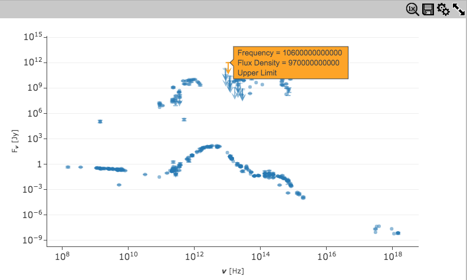
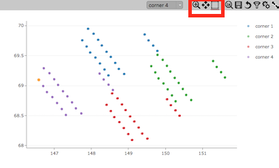
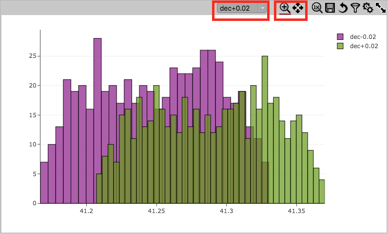
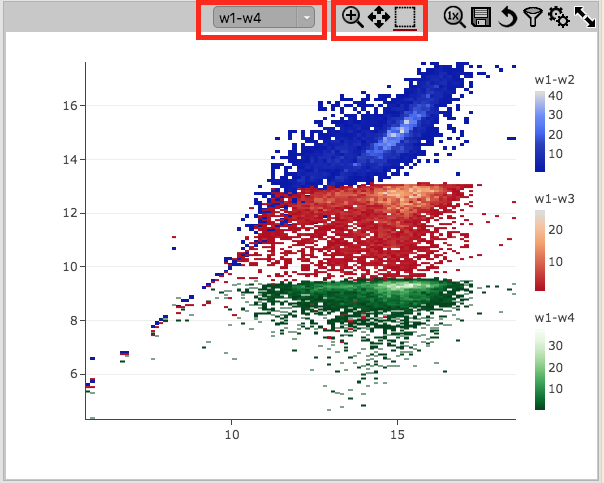
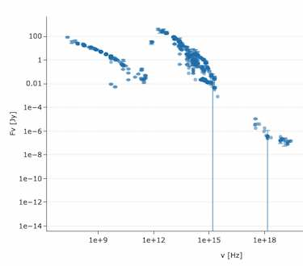

All views are connected. Filtering from any view should affect table and all charts. Selecting should affect table and all scatters.
Multi-chart viewer allows to switch between single chart view and chart grid.
Charts should be deletable, unless one chart is left.
Arrows represent upper limits. Click on one of the arrows, and move a mouse over it to see the tooltip.
It should say "Upper limit" on the bottom.
Use mouse wheel to zoom. Reset back to the original size with 1x button on top.

Arrows represent upper or lower limits. Click on one of the arrows, and move a mouse over it to see the tooltip.
It should say "Upper limit" or "Lower Limit" on the bottom.
Use mouse wheel to zoom. Reset back to the original size with 1x button on top.

Select mode should be underlined (active by default)
Each trace represents a corner of an image
Filtering, selecting, and highlighting applies to the active trace (displayed in toolbar)
After dragging mouse over to select an area with no active trace points, a warning should be displayed:
"No active trace points in the selection area"
Single trace chart error: trace should not be mentioned
Multi-trace chart error: error should mention the trace name or number
If multiple columns do not exist, only the first one is mentioned
Non-existing column name is shown in lower case

Zoom mode should be active (undelined) by default, select mode should not be available.
Active trace (shown on the toolbar) should be on top of other traces.
Selecting different trace in the list on the toolbar should make it active.

Zoom mode should be active (undelined) by default
Active trace (shown on the toolbar) should be on top of other traces.
Selecting different trace in the list on the toolbar should make it active.
Two interactive Plotly charts:
Pie chart
Two traces: scatter and line
Firefly can show any chart, supported by Plotly.
See plotly.js reference for available attributes.
The same charts as in the previous test, but with a multi-chart viewer toolbar.
Notice, that Firefly defaults for scatter chart are different from Plotly defaults.
You can specify any layout option explicitely, when creating the chart to achieve the desired look.
Multichart viewer allows to switch between single chart view and chart grid.
A few layout options can be modified from Settings dialog, accessible from the tool bar.
This is an example of using API to inject SpectrumDM information into a NED query table.
Firefly will create a default Spectrum plot from the given info.
